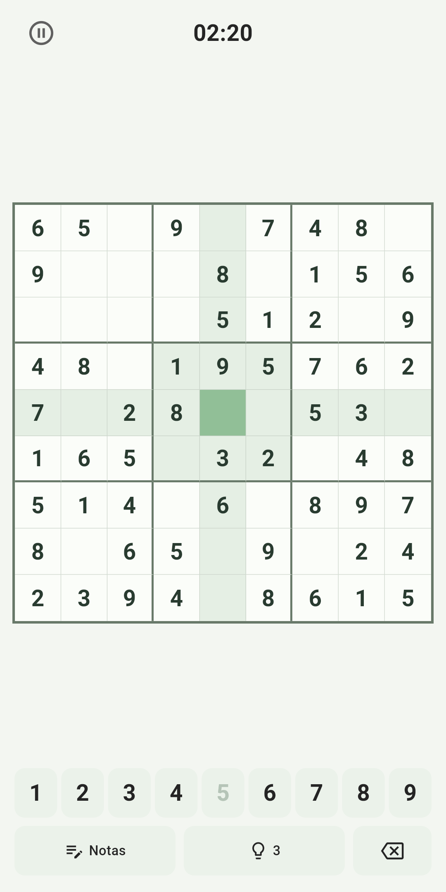
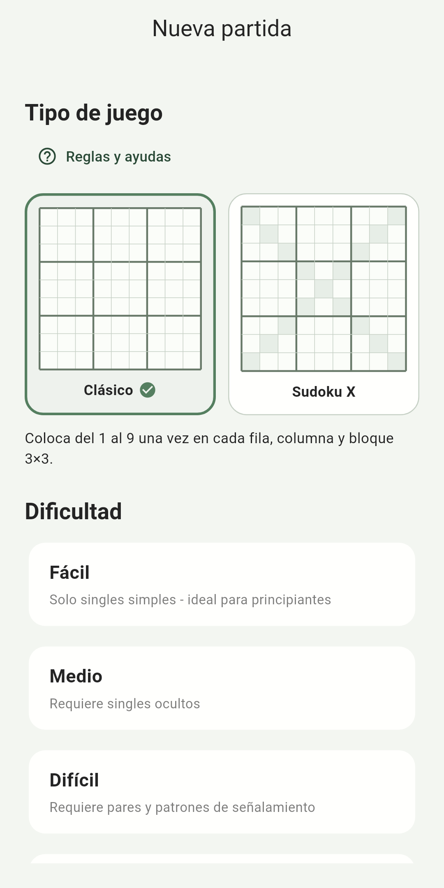
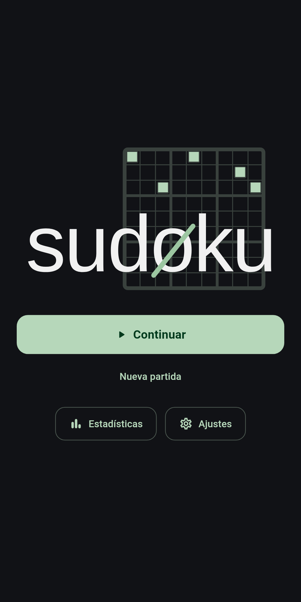

sudøku
Una app de Sudoku centrada en el placer de resolver. Los nuevos puzles se generan directamente en tu dispositivo, con herramientas bien pensadas cuando las quieres y un tablero limpio cuando no las necesitas.
Así es sudøku



Hecho para el puzle
sudøku está diseñado para que resolver a diario sea cómodo: elige una dificultad, céntrate en el tablero y utiliza tanta o tan poca ayuda como te convenga.
Nuevos puzles, creados en tu dispositivo
Los puzles se generan y validan localmente, para que siempre tengas nuevas partidas sin depender de un catálogo en la nube.
Un tablero pensado para concentrarse
Controles claros, números legibles, respuestas visuales cuidadas e interacciones bien elegidas mantienen la atención en la resolución.
Cuatro niveles de dificultad
Elige el nivel que encaje con el momento, desde una partida relajada hasta un puzle más exigente.
Estadísticas locales útiles
Sigue tu historial y rendimiento mientras tus datos permanecen en tu propio dispositivo.
Herramientas de resolución bien pensadas
Notas, pistas, protección al pausar, revisión de errores y una breve ventana de corrección te ayudan sin recargar el tablero.
Tu estilo, tu ritmo
Modo claro y oscuro, varios temas de color y asistencia opcional permiten adaptar la app a tu forma de jugar.
Sin conexión por diseño
La experiencia principal de Sudoku funciona en tu dispositivo. La generación de puzles, la lógica de resolución, las partidas activas y las estadísticas no dependen de un servidor de puzles ni de una cuenta. Así el juego se mantiene rápido, robusto y autónomo.
La versión gratuita puede utilizar servicios de la plataforma para publicidad y compras; esos servicios están separados del motor local de generación de puzles. Consulta la declaración de privacidad para más detalles.
Simplemente un buen Sudoku
Una experiencia cuidada, herramientas útiles, condiciones justas y tecnología que permanece en segundo plano. Esa es toda la idea.